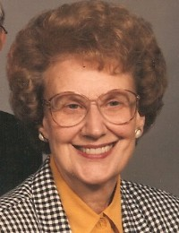
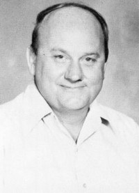

Helen Geneva Wahl
K, #1626, f. 21 juli 1929, d. 15 november 2013
Foreldre

Helena G. Wahl
Biografi
Helen Geneva Wahl ble født den 21 juli 1929 på/i Larchwood, Iowa, USA. Hun giftet seg med
Ernest Leo Dafoe. Hun døde den 15 november 2013 på/i Good Samaritan Village, Sioux Falls, Minnehaha County, South Dakota, USA. Hun ble gravlagt på/i Hills of Rest Memorial Park, Sioux Falls, Minnehaha County, South Dakota, USA.
Helen Geneva Wahl was also known as Helen Geneva Dafoe.
| Sist redigert |
1 april 2025 22:23:53 |
| Slektskap | 3-menning 1 gang forskjøvet til Håkon Wahl |
James Francis Wahl
M, #1627, f. 28 desember 1933, d. 17 januar 2016
Foreldre
Familie: Teresa A. Curry
| Datter | Catherine Wahl |
| Sønn | Stephen L. Wahl |

James Francis Wahl (1933-20169
Biografi
James Francis Wahl ble født den 28 desember 1933 på/i Larchwood, Lyon County, Iowa, USA. Han giftet seg med Teresa A. Curry den 29 mai 1963 på/i Las Vegas, Nevada, USA. Han døde den 17 januar 2016 på/i Las Vegas, Clark County, Nevada, USA.
James served in the U/S. Army during the Koran War as a paratrooper in the 101st Airborne Division. He enjoyed teaching math at Rancho High School and continued to stay in contact with many of his students until he retired in 1992.
| Sist redigert |
23 juni 2026 21:37:27 |
| Slektskap | 3-menning 1 gang forskjøvet til Håkon Wahl |
Arvid Eggen
M, #1628, f. 4 desember 1928, d. 3 desember 2015
Foreldre
| Far | Einar Eggen |
| Mor | Gudlaug Wahl (f. 2 januar 1898, d. 10 februar 1972) |
Biografi
Arvid Eggen ble født den 4 desember 1928 på/i Trondheim, Sør-Trøndelag. Han giftet seg med
Snefrid Reidun Bjøringsøy. Han døde den 3 desember 2015. Han ble gravlagt den 10 desember 2015 på/i Ven kirkegård, Snillfjord, Sør-Trøndelag.
Arvid Eggen bodde på/i Snillfjord, Sør-Trøndelag.
| Sist redigert |
9 mai 2023 11:20:00 |
| Slektskap | 3-menning 1 gang forskjøvet til Håkon Wahl |
Nicoline Pedersdatter Nubdal
K, #1629, f. 10 november 1816, d. 21 juni 1889
Foreldre
Biografi
Nicoline Pedersdatter Nubdal ble født den 10 november 1816 på/i Nubdal; Kolvereid, Nærøy, Nord-Trøndelag. Hun giftet seg med
Helmer Johansen Buchholdt den 17 juli 1845. Hun døde den 21 juni 1889 på/i Fjær; Kolvereid, Nærøy, Nord-Trøndelag.
| Sist redigert |
21 oktober 2010 00:00:00 |
| Slektskap | 4-menning 4 ganger forskjøvet til Håkon Wahl |
Petra Lovise Strand
K, #1630, f. 12 september 1841, d. 23 juli 1902
Foreldre
Biografi
Petra Lovise Strand ble født den 12 september 1841 på/i Nubdal; Kolvereid, Nærøy, Nord-Trøndelag. Hun giftet seg med
Carl Christian Fredrik Helmersen Buchholdt den 9 januar 1862. Hun døde den 23 juli 1902 på/i Fjær; Kolvereid, Nærøy, Nord-Trøndelag.
Petra Lovise Strand was also known as Petra Lovise Buchholdt.
| Sist redigert |
22 oktober 2010 00:00:00 |
| Slektskap | Søskenbarn 3 ganger forskjøvet til Håkon Wahl |
Carl Christian Fredrik Helmersen Buchholdt
M, #1631, f. 14 april 1840, d. 14 august 1929
Foreldre
Biografi
Carl Christian Fredrik Helmersen Buchholdt ble født u.e. den 14 april 1840 på/i Klungvik, Nærøy, Nord-Trøndelag. Han giftet seg med
Petra Lovise Strand den 9 januar 1862. Han døde den 14 august 1929 på/i Sørvika; Foldereid, Nærøy, Nord-Trøndelag.
Carl Christian Fredrik Helmersen Buchholdt was also known as Christian Fredrich Buchholdt.
| Sist redigert |
1 februar 2026 09:44:25 |
Anna Christiansdatter Buchholdt
K, #1632, f. 5 februar 1860, d. 31 januar 1956
Foreldre
Biografi
Anna Christiansdatter Buchholdt ble født den 5 februar 1860 på/i Kolvereid, Nærøy, Nord-Trøndelag. Hun giftet seg med
Otto Kristiansen Osan. Hun døde den 31 januar 1956 på/i Osan 48/6, Søreitran; Gravvik, Nærøy, Nord-Trøndelag.
| Sist redigert |
22 oktober 2010 00:00:00 |
| Slektskap | 3-menning 2 ganger forskjøvet til Håkon Wahl |
Kristine Pauline Christiansdatter Buchholdt
K, #1633, f. 24 november 1863, d. 8 oktober 1955
Foreldre
Biografi
Kristine Pauline Christiansdatter Buchholdt ble født den 24 november 1863 på/i Kolvereid, Nærøy, Nord-Trøndelag. Hun giftet seg med
Anton Jæger Johansen den 25 juni 1894. Hun døde den 8 oktober 1955 på/i Kolvereid, Nærøy, Nord-Trøndelag.
| Sist redigert |
22 oktober 2010 00:00:00 |
| Slektskap | 3-menning 2 ganger forskjøvet til Håkon Wahl |
Nikolai Hartvig Christiansen Buchholdt
M, #1634, f. 14 juni 1865, d. 1928
Foreldre
Familie: Tomina (f. 1861, d. 1938)
Biografi
Nikolai Hartvig Christiansen Buchholdt ble født den 14 juni 1865 på/i Fjær 36/2, Fjær; Kolvereid, Nærøy, Nord-Trøndelag. Han giftet seg med
Tomina. Han døde i 1928. Han ble gravlagt på/i Koppang kirkegård, Stor-Elvdal, Hedmark.
Hartvig (det var det navnet han benyttet) var en tur i USA, men kom tilbake og bosatte seg på Koppang. Nikolai Hartvig Christiansen Buchholdt bodde i 1900 på/i Wærum 19/123, Koppang, Stor-Elvdal, Hedmark.
| Sist redigert |
7 november 2014 00:00:00 |
| Slektskap | 3-menning 2 ganger forskjøvet til Håkon Wahl |
Beret Kristine Christiansdatter Buchholdt
K, #1635, f. 12 juli 1868, d. 11 desember 1870
Foreldre
Biografi
Beret Kristine Christiansdatter Buchholdt ble født den 12 juli 1868 på/i Fjær 36/2, Fjær; Kolvereid, Nærøy, Nord-Trøndelag. Hun døde den 11 desember 1870 på/i Kolvereid, Nærøy, Nord-Trøndelag. Beret omkom ved drukning.
| Sist redigert |
16 juli 2022 16:01:48 |
| Slektskap | 3-menning 2 ganger forskjøvet til Håkon Wahl |
Laura Sofie Christiansdatter Buchholdt
K, #1636, f. 2 desember 1870, d. 24 juli 1953
Foreldre
Biografi
Laura Sofie Christiansdatter Buchholdt ble født den 2 desember 1870 på/i Fjær 36/2, Fjær; Kolvereid, Nærøy, Nord-Trøndelag. Hun giftet seg med
Otto Christiansen Horven den 21 mai 1895. Hun døde den 24 juli 1953 på/i Kolvereid, Nærøy, Nord-Trøndelag. Hun ble gravlagt den 29 juli 1953 på/i Kolvereid kirkegård, Nærøy, Nord-Trøndelag.
Laura Sofie Christiansdatter Buchholdt was also known as Laura Sofie Horven.
| Sist redigert |
22 oktober 2010 00:00:00 |
| Slektskap | 3-menning 2 ganger forskjøvet til Håkon Wahl |
Edvind Bendikt Christiansen Buchholdt
M, #1637, f. 24 oktober 1873
Foreldre
Biografi
Edvind Bendikt Christiansen Buchholdt ble født den 24 oktober 1873 på/i Kolvereid, Nærøy, Nord-Trøndelag.
Edvind Bendikt Christiansen Buchholdt emigrerte til USA.
| Sist redigert |
16 mai 2023 23:35:14 |
| Slektskap | 3-menning 2 ganger forskjøvet til Håkon Wahl |
Agnes Kristine Christiansdatter Buchholdt
K, #1638, f. 1 mai 1876
Foreldre
Biografi
Agnes Kristine Christiansdatter Buchholdt ble født den 1 mai 1876 på/i Kolvereid, Nærøy, Nord-Trøndelag. Hun giftet seg med
Erik Blystad.
Agnes Kristine Christiansdatter Buchholdt was also known as Agnes Kristine Christiansdatter Blystad.
| Sist redigert |
22 oktober 2010 00:00:00 |
| Slektskap | 3-menning 2 ganger forskjøvet til Håkon Wahl |
Marie Lucie Christiansdatter Buchholdt
K, #1639, f. 23 oktober 1878, d. 9 august 1952
Foreldre
Biografi
Marie Lucie Christiansdatter Buchholdt ble født den 23 oktober 1878 på/i Fjær; Kolvereid, Nærøy, Nord-Trøndelag. Hun giftet seg med
Karolius Bernhof Olsen Sørvik den 13 september 1904. Hun døde den 9 august 1952 på/i Foldereid, Nærøy, Nord-Trøndelag. Hun ble gravlagt den 16 august 1952 på/i Foldereid kirkegård, Nærøy, Nord-Trøndelag.
Marie Lucie Christiansdatter Buchholdt was also known as Lucie Marie Buchholdt. Hun was also known as Marie Lucie Sørvik. Hun ble hjemmedøpt den 29 oktober 1878. Hun fikk dåpen bekreftet den 22 mai 1879 på/i Foldereid kirke, Nærøy, Nord-Trøndelag.
| Sist redigert |
22 oktober 2010 00:00:00 |
| Slektskap | 3-menning 2 ganger forskjøvet til Håkon Wahl |
Vilhelmine Christiansdatter Buchholdt
K, #1640, f. 21 september 1881, d. 18 mai 1882
Foreldre
Biografi
Vilhelmine Christiansdatter Buchholdt ble født den 21 september 1881 på/i Kolvereid, Nærøy, Nord-Trøndelag. Hun døde den 18 mai 1882 på/i Kolvereid, Nærøy, Nord-Trøndelag.
| Sist redigert |
22 oktober 2010 00:00:00 |
| Slektskap | 3-menning 2 ganger forskjøvet til Håkon Wahl |
Otto Kristiansen Osan
M, #1641, f. 15 februar 1846, d. 27 desember 1928
Biografi
Otto Kristiansen Osan ble født den 15 februar 1846 på/i Gausdal, Oppland. Han giftet seg med
Anna Christiansdatter Buchholdt. Han døde den 27 desember 1928 på/i Osan 48/6, Søreitran; Gravvik, Nærøy, Nord-Trøndelag. Han ble gravlagt på/i Gravvik kirkegård, Nærøy, Nord-Trøndelag.
Otto Kristiansen Osan was also known as Otte Osan. Han kjøpte den 24 juni 1893 Osan 48/6, Søreitran; Gravvik, Nærøy, Nord-Trøndelag, for 600 kroner + kår.
| Sist redigert |
4 august 2022 17:10:02 |
Ottar Ottosen Osan
M, #1642, f. 18 juni 1886, d. 24 januar 1962
Foreldre
Biografi
Ottar Ottosen Osan ble født den 18 juni 1886 på/i Gravvik, Nærøy, Nord-Trøndelag. Han giftet seg med
Karen Danielsdatter Krekling i 1923. Han døde den 24 januar 1962 på/i Nærøy, Nord-Trøndelag. Han ble gravlagt på/i Gravvik kirkegård, Nærøy, Nord-Trøndelag.
Ottar Ottosen Osan eide i 1926 Osan 48/6, Søreitran; Gravvik, Nærøy, Nord-Trøndelag, - Skjøte fikk han mange år senere av sin mor, dat. 10.2.1950.
| Sist redigert |
3 august 2022 15:03:23 |
| Slektskap | 4-menning 1 gang forskjøvet til Håkon Wahl |
Karen Danielsdatter Krekling
K, #1643, f. 1 februar 1895, d. 24 desember 1986
Foreldre
Biografi
Karen Danielsdatter Krekling ble født den 1 februar 1895 på/i Foldereid, Nærøy, Nord-Trøndelag. Hun giftet seg med
Ottar Ottosen Osan i 1923. Hun døde den 24 desember 1986 på/i Nærøy, Nord-Trøndelag. Hun ble gravlagt på/i Gravvik kirkegård, Nærøy, Nord-Trøndelag.
Karen Danielsdatter Krekling was also known as Karen Osan.
| Sist redigert |
11 august 2012 00:00:00 |
| Slektskap | 5-menning 2 ganger forskjøvet til Håkon Wahl |
Anton Jæger Johansen
M, #1644, f. 11 januar 1870, d. 24 mars 1945
Foreldre
Biografi
Anton Jæger Johansen ble født den 11 januar 1870 på/i Småenget 43/5, Værem; Kolvereid, Nærøy, Nord-Trøndelag. Han giftet seg med
Kristine Pauline Christiansdatter Buchholdt den 25 juni 1894. Han døde den 24 mars 1945 på/i Kolvereid, Nærøy, Nord-Trøndelag.
Anton Jæger Johansen kjøpte i 1919 Kvernbakken 42/2, Langstrand; Kolvereid, Nærøy, Nord-Trøndelag, for 500 kroner.
| Sist redigert |
4 august 2022 16:58:12 |
| Slektskap | 4-menning 4 ganger forskjøvet til Håkon Wahl |
Nora Nilsdatter Kristoffersen
K, #1645, f. 4 mai 1886, d. 2 desember 1972
Foreldre
Biografi
Nora Nilsdatter Kristoffersen ble født den 4 mai 1886 på/i Kolvereid, Nærøy, Nord-Trøndelag. Hun giftet seg med
Einar A. Finnvik den 27 mars 1923 på/i Nærøy, Nord-Trøndelag. Hun døde den 2 desember 1972. Hun ble gravlagt den 9 desember 1972 på/i Kolvereid kirkegård, Nærøy, Nord-Trøndelag.
Nora Nilsdatter Kristoffersen was also known as Nora Finnvik. Hun was also known as Nora Fjær.
| Sist redigert |
15 august 2025 16:05:31 |
| Slektskap | 4-menning 1 gang forskjøvet til Håkon Wahl |
Jenny Agnete Johansen
K, #1646, f. 4 november 1894, d. 11 april 1944
Foreldre
Biografi
Jenny Agnete Johansen ble født den 4 november 1894 på/i Kolvereid, Nærøy, Nord-Trøndelag. Hun giftet seg med
Meier Martin Johansen Haugvik den 13 november 1917 på/i Leka, Nord-Trøndelag. Hun døde den 11 april 1944 på/i Leka, Nord-Trøndelag. Hun ble gravlagt den 18 april 1944 på/i Leka kirkegård, Leka, Trøndelag.
Jenny Agnete Johansen was also known as Jenny Agnete Haugvik.
| Sist redigert |
21 april 2023 23:30:47 |
| Slektskap | 4-menning 1 gang forskjøvet til Håkon Wahl |
Frida Eugenie Johansen
K, #1647, f. 3 februar 1897, d. 21 juni 1934
Foreldre
Biografi
Frida Eugenie Johansen ble født den 3 februar 1897 på/i Kolvereid, Nærøy, Nord-Trøndelag. Hun døde den 21 juni 1934 på/i Kolvereid, Nærøy, Nord-Trøndelag.
| Sist redigert |
22 oktober 2010 00:00:00 |
| Slektskap | 4-menning 1 gang forskjøvet til Håkon Wahl |
Astrid Johansen
K, #1648, f. 23 april 1899
Foreldre
Biografi
Astrid Johansen ble født den 23 april 1899 på/i Kolvereid, Nærøy, Nord-Trøndelag.
| Sist redigert |
22 oktober 2010 00:00:00 |
| Slektskap | 4-menning 1 gang forskjøvet til Håkon Wahl |
Oskar Kristoffer Johansen
M, #1649, f. 14 desember 1904, d. 12 desember 1967
Foreldre
Biografi
Oskar Kristoffer Johansen ble født den 14 desember 1904 på/i Kolvereid, Nærøy, Nord-Trøndelag. Han døde den 12 desember 1967 på/i Kolvereid, Nærøy, Nord-Trøndelag.
Oskar Kristoffer Johansen brukte omtrent 1945 Kvernbakken 42/2, Langstrand; Kolvereid, Nærøy, Nord-Trøndelag. Han kjøpte den 29 oktober 1955 Kvernbakken 42/2, Langstrand; Kolvereid, Nærøy, Nord-Trøndelag.
| Sist redigert |
22 oktober 2010 00:00:00 |
| Slektskap | 4-menning 1 gang forskjøvet til Håkon Wahl |
Einar A. Finnvik
M, #1650, f. 23 mars 1894, d. 20 juli 1968
Foreldre
Biografi
Einar A. Finnvik ble født den 23 mars 1894 på/i Nærøy, Nord-Trøndelag. Han giftet seg med
Nora Nilsdatter Kristoffersen den 27 mars 1923 på/i Nærøy, Nord-Trøndelag. Han døde den 20 juli 1968. Han ble gravlagt den 24 juli 1968 på/i Kolvereid kirkegård, Nærøy, Nord-Trøndelag.
| Sist redigert |
22 oktober 2010 00:00:00 |
| Slektskap | 6-menning 2 ganger forskjøvet til Håkon Wahl |
{kind=link}
{kind=link}